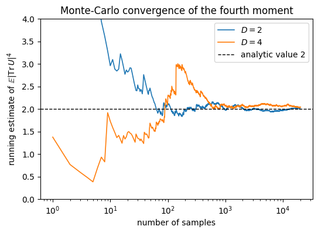

Haar Measure & Weingarten Calculus, numerical solution.
The Fourth Moment of the Trace
This notebook derives \(\mathbb{E}_U[|\mathrm{Tr}(U)|^4] = 2\) step by step, using SymPy to perform every index contraction symbolically. The result is independently verified by Monte Carlo sampling of Haar-random unitaries.
1. Background
The trace of a unitary, \(\mathrm{Tr}\,U\), is a complex number whose typical size we can study by averaging powers of its magnitude over the unitary group. The fourth moment \(\mathbb{E}[|\mathrm{Tr}\,U|^4]\) is the first such average that genuinely probes correlations between matrix entries, since it pairs two copies of \(U\) with two copies of \(U^\dagger\). Lower powers either vanish or are fixed by the first moment alone, so this is where the structure begins.
Evaluating it calls for the \(k=2\) Weingarten formula, which expresses the average as a sum over the two permutations of two objects, the identity and the swap. Each permutation contributes a weight times a power of \(D\) that counts closed index loops, and the planar and non-planar wirings partly cancel. What remains is the value \(2\), holding for every dimension \(D \ge 2\) with no residual dependence on \(D\).
That dimension independence is what makes the number useful as a reference. A unitary ensemble reproduces this fourth moment exactly when it forms a unitary 2-design, so \(\mathbb{E}[|\mathrm{Tr}\,U|^4]=2\) serves as a concrete check on how well a finite ensemble imitates the full Haar measure at second order. The same quantity reappears as a fixed feature of the spectral form factor of the circular unitary ensemble.
The notebook derives the result by carrying out the index contractions symbolically over the four permutation pairs, then confirms the value by sampling Haar-random unitaries and watching the running average settle at \(2\).
2. Mathematical Preliminaries
The symmetric group \(S_k\)
The symmetric group\(S_k\) is the group of all permutations of \(\{1, \ldots, k\}\), containing \(k!\) elements. For \(k=2\): \(S_2 = \{\mathrm{id}, (12)\}\), where \((12)\) is the transposition swapping elements 1 and 2.
The Weingarten function
The Weingarten function\(\mathrm{Wg}(\pi, D)\) assigns a weight to each permutation \(\pi \in S_k\), depending on the Hilbert space dimension \(D\) and the cycle structure of \(\pi\). It is the inverse of the Gram matrix of permutation operators under the Haar measure: \[\sum_{\sigma \in S_k} \mathrm{Wg}(\sigma, D) \cdot D^{\#\mathrm{cycles}(\pi\sigma^{-1})} = \delta_{\pi, \mathrm{id}}.\]
For \(k=2\) there are two values: \[\mathrm{Wg}(\mathrm{id}, D) = \frac{1}{D^2 - 1}, \qquad \mathrm{Wg}\bigl((12), D\bigr) = \frac{-1}{D(D^2 - 1)}.\]
Note: \(|\mathrm{Wg}(\mathrm{id})| > |\mathrm{Wg}((12))|\), the identity (uncrossed) pairing dominates.
Setting \(j_a = i_a\) and \(m_a = \ell_a\) (the trace constraint).
Step 2: Enumerate the four \((\pi, \sigma)\) terms
\((\pi, \sigma)\)
\(\pi^{-1}\sigma\)
Wg weight
Left deltas
Right deltas
Loop factor
\((\mathrm{id}, \mathrm{id})\)
\(\mathrm{id}\)
\(\frac{1}{D^2-1}\)
\(\delta_{i_1\ell_1}\delta_{i_2\ell_2}\)
\(\delta_{i_1\ell_1}\delta_{i_2\ell_2}\)
\(D^2\)
\(((12), (12))\)
\(\mathrm{id}\)
\(\frac{1}{D^2-1}\)
\(\delta_{i_1\ell_2}\delta_{i_2\ell_1}\)
\(\delta_{i_1\ell_2}\delta_{i_2\ell_1}\)
\(D^2\)
\((\mathrm{id}, (12))\)
\((12)\)
\(\frac{-1}{D(D^2-1)}\)
\(\delta_{i_1\ell_1}\delta_{i_2\ell_2}\)
\(\delta_{i_1\ell_2}\delta_{i_2\ell_1}\)
\(D\)
\(((12), \mathrm{id})\)
\((12)\)
\(\frac{-1}{D(D^2-1)}\)
\(\delta_{i_1\ell_2}\delta_{i_2\ell_1}\)
\(\delta_{i_1\ell_1}\delta_{i_2\ell_2}\)
\(D\)
Why \(D\) vs \(D^2\)? When \(\pi = \sigma\), the left and right deltas agree, giving 2 free indices → \(D^2\). When \(\pi \neq \sigma\), they conflict, forcing all 4 indices equal → only 1 free index → \(D\).
# Step 4: Brute-force index contraction verification# For specific D, explicitly sum over all indices with Kronecker deltasprint('=== Brute-force index contraction verification ===')print()for D_val in [2, 3, 4]:print(f'D = {D_val}:')for pi_name, pi_fn, sigma_name, sigma_fn in [ ('id', lambda a: a, 'id', lambda a: a), ('(12)', lambda a: 1-a, '(12)', lambda a: 1-a), ('id', lambda a: a, '(12)', lambda a: 1-a), ('(12)', lambda a: 1-a, 'id', lambda a: a), ]:# Sum over i1,i2,l1,l2 of prod_a delta(i_a, l_{pi(a)}) * delta(i_a, l_{sigma(a)}) total_sum =0for i1 inrange(D_val):for i2 inrange(D_val):for l1 inrange(D_val):for l2 inrange(D_val): i = [i1, i2]; l = [l1, l2] val =1for a inrange(2): val *= (1if i[a] == l[pi_fn(a)] else0) val *= (1if i[a] == l[sigma_fn(a)] else0) total_sum += val expected = D_val**2if pi_name == sigma_name else D_valprint(f' π={pi_name:4s}, σ={sigma_name:4s}: sum = {total_sum} (expected {expected}) 'f'{""if total_sum == expected else""}')print()
=== Brute-force index contraction verification ===
D = 2:
π=id , σ=id : sum = 4 (expected 4)
π=(12), σ=(12): sum = 4 (expected 4)
π=id , σ=(12): sum = 2 (expected 2)
π=(12), σ=id : sum = 2 (expected 2)
D = 3:
π=id , σ=id : sum = 9 (expected 9)
π=(12), σ=(12): sum = 9 (expected 9)
π=id , σ=(12): sum = 3 (expected 3)
π=(12), σ=id : sum = 3 (expected 3)
D = 4:
π=id , σ=id : sum = 16 (expected 16)
π=(12), σ=(12): sum = 16 (expected 16)
π=id , σ=(12): sum = 4 (expected 4)
π=(12), σ=id : sum = 4 (expected 4)
Code
# Step 5: NumPy Monte Carlo cross-checkfrom scipy.stats import unitary_groupnp.random.seed(42)print('=== NumPy Monte Carlo cross-check ===')print()for D_val in [2, 3, 4, 8, 16]: n_samples =30000 vals = np.array([abs(np.trace(unitary_group.rvs(D_val)))**4for _ inrange(n_samples)]) mc_mean = np.mean(vals) mc_err = np.std(vals) / np.sqrt(n_samples)print(f' D={D_val:3d}: MC = {mc_mean:.4f} ± {mc_err:.4f} (analytic: 2.0000)')assertabs(mc_mean -2) <3*mc_err +0.05print()print('Dimension-independent fourth moment = 2 confirmed')
=== NumPy Monte Carlo cross-check ===
D= 2: MC = 1.9626 ± 0.0181 (analytic: 2.0000)
D= 3: MC = 1.9932 ± 0.0252 (analytic: 2.0000)
D= 4: MC = 2.0095 ± 0.0261 (analytic: 2.0000)
D= 8: MC = 1.9588 ± 0.0245 (analytic: 2.0000)
D= 16: MC = 1.9798 ± 0.0256 (analytic: 2.0000)
Dimension-independent fourth moment = 2 confirmed
4. Physical Interpretation
Tensor network perspective: Each of the four \((\pi,\sigma)\) terms corresponds to a distinct wiring of the tensor diagram: - Planar pairings (\(\pi^{-1}\sigma = \mathrm{id}\)): uncrossed wires, producing 2 independent loops → \(D^2\) per term - Non-planar pairings (\(\pi^{-1}\sigma = (12)\)): crossed wires, forcing all indices to collapse to 1 loop → \(D\) per term
The exact cancellation \(\frac{2D^2}{D^2-1} - \frac{2}{D^2-1} = 2\) is the algebraic manifestation of a topological fact: the number of independent wiring topologies, not the dimension of the group, controls the moments. This universality is why \(|\mathrm{Tr}(U)|^4 = 2\) serves as the benchmark test for 2-design convergence.
Code
%matplotlib inlineimport matplotlib.pyplot as pltfrom scipy.stats import unitary_groupnp.random.seed(0)n_samples =20000idx = np.arange(1, n_samples +1)fig, ax = plt.subplots(figsize=(6, 4))for D_val in [2, 4]: vals = np.array([abs(np.trace(unitary_group.rvs(D_val)))**4for _ inrange(n_samples)]) running = np.cumsum(vals) / idx ax.plot(idx, running, lw=1.2, label=f'$D = {D_val}$')ax.axhline(2.0, color='k', ls='--', lw=1, label='analytic value 2')ax.set_xscale('log')ax.set_ylim(0, 4)ax.set_xlabel('number of samples')ax.set_ylabel(r'running estimate of $\mathbb{E}|\mathrm{Tr}\,U|^4$')ax.set_title('Monte-Carlo convergence of the fourth moment')ax.legend()plt.show()

5. Takeaway
The fourth moment of the trace equals \(2\) for all \(D \ge 2\), with no residual dimension dependence, the cancellation between planar and non-planar pairings leaving a constant. A running Monte Carlo estimate over Haar-random unitaries converges to this value.